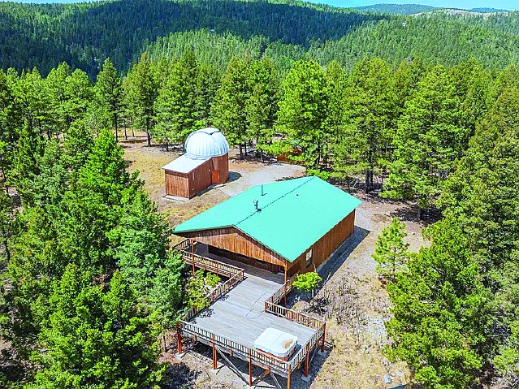
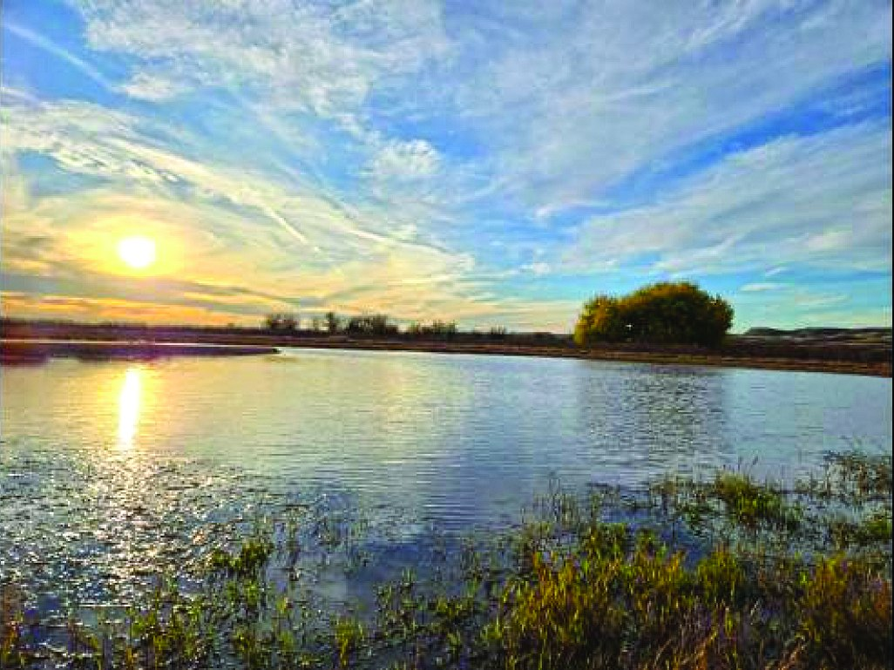
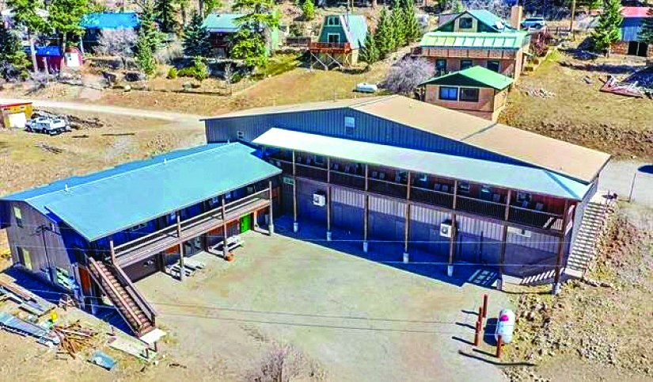
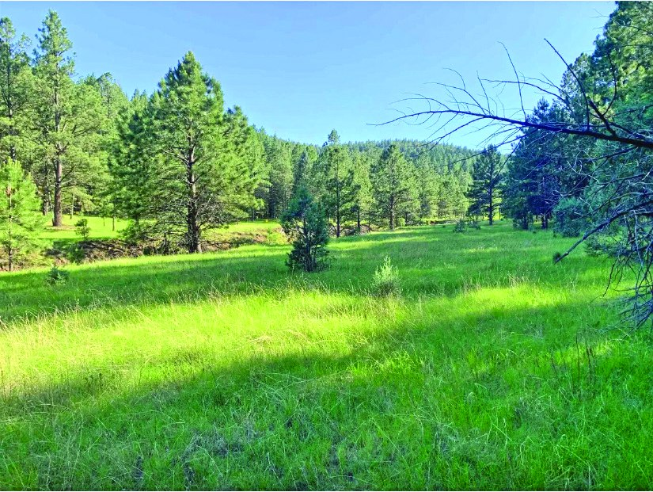
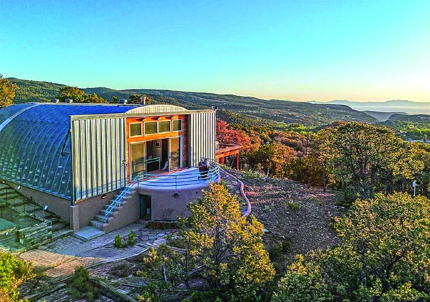
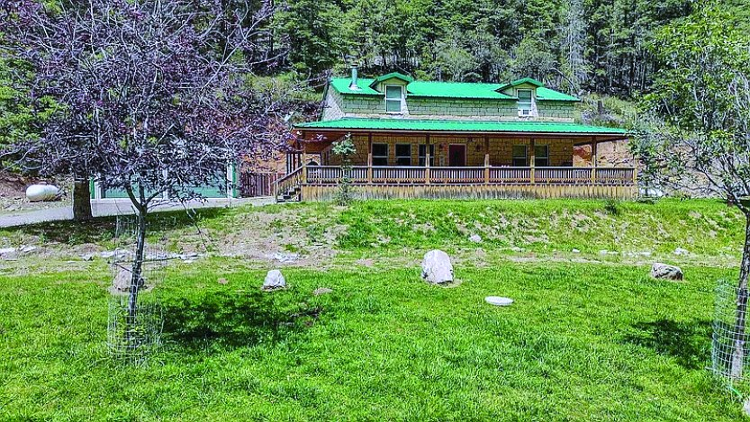

$1,580,000 33.0 Acre Property in Cloudcroft 33.0 acres Cloudcroft, New Mexico MLS #171070
5344 Red Lake Road, Fort Sumner, NM
$1,592,000
| Price | $1,592,000 |
|---|---|
| Land | 1705.0 acres |
| Address | 5344 Red Lake Road, Fort Sumner, NM |
| Listed by | Teague Ranch Real Estate |
| Print edition | October 2026 Otero County Edition, page 6 |
About this property
Red Lake Ranch — 5344 Red Lake Road, Fort Sumner, NM 6 The Real Estate Roundup – Otero County Edition Red Lake Ranch 5344 Red Lake Road, Fort Sumner, NM Step back in time at this beautiful historic ranch nestled in the heart of the Land of Enchantment! Red Lake Ranch offers the perfect blend of history, natural waters, & native grasses for cattle, horses, & a variety of wildlife. The geographical diversity of this ranch creates stunning views from the Top of the Mesa. As the sun sets, the red clay & painted rim rock comes alive in a beautiful blend of colors. A variety of water fowl frequent the lake perfect for hunters or outdoor enthusiasts. The vegetation from sub-moisture of the lake bottom and the remains of the dry stacked rock wall corrals tell a story of an agricultural hot spot. The dugout & homestead ruins on the rim, as well as the Native American artifacts show the importance of this place for many generations. Some of Red Lake Ranch’s more recent improvements include a fully furnished two-story log home and 2 working water wells. An extensive series of well-maintained ranch roads enhance your ease & exploration of the property, while creating enjoyable hunting and recreational opportunities to see wildlife such as deer, antelope and other native species. Red Lake Ranch conveniently sits 30 miles from Lake Sumner where you can often enjoy fishing and water activities . It is only 11 miles from the town of Fort Sumner, which is the final resting place of William Bonny aka Billy The Kid. Let Red Lake Ranch be your new home or secluded getaway.
Interested in this property?
Joe Teague
Phone: 575-910-8241
Email: joe@t-r-r.com
Teague Ranch Real Estate
Please contact the listing agent or company directly. The Real Estate Roundup is a publisher and does not show or sell properties.
Listing details and photo reproduced from the October 2026 print edition of The Real Estate Roundup (page 6), as printed. Prices and availability can change after publication — confirm with the listing agent.
More Homes

$1,250,000 102 Mexican Ave MLS #170585
$1,970,000 Property in Sixteen Springs Sixteen Springs, New Mexico MLS #172823 $2,200,000
163 Karr Canyon Rd
126.0 acres
High Rolls, New Mexico
MLS #172448
$2,200,000
163 Karr Canyon Rd
126.0 acres
High Rolls, New Mexico
MLS #172448

$955,000 61 Haynes Canyon Rd High Rolls Mtn Park High Rolls, New Mexico MLS #172656
$925,000 80 Mamaw St. 4 bd · 2.5 ba · 6.0 acres MLS #173172